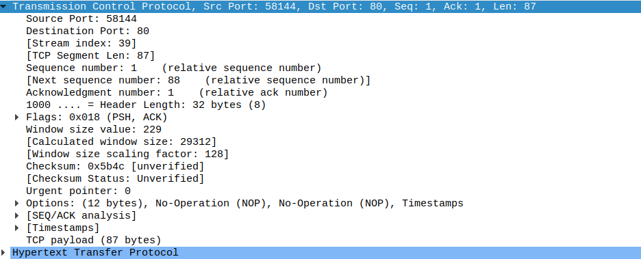
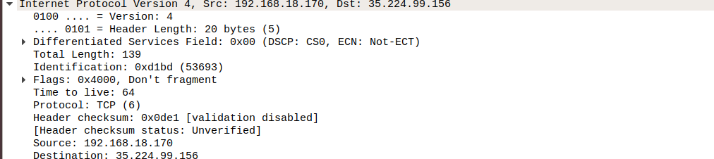
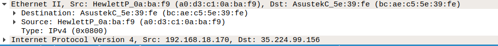
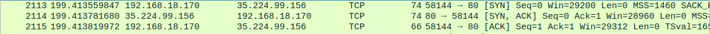

El HTTP utiliza como capa de transporte:
Utilizamos el puerto 80 como destino y el puerto 58144 como destino.
El tamaño de ventana es de 229 y el payload es de 87 bytes.
El HTTP utiliza como capa de red:
Como dirección ip de origen es 192.168.18.170
Como dirección ip de destino es 35.224.99.156
El header tiene un tamaño de 20 bytes
El protocolo es TCP
El HTTP utiliza como capa de enlace:
La LAN de origen es a0:d3:c1:0a:ba:f9
La LAN de destino es bc:ae:c5:5e:39:fe
Utiliza HTPP 1.1
Ese es el acuerdo TCP a tres bandas donde en el priemr TCP es el cliente solicitando la petición web, el segundo es el servidor dando esa petición al cliente y el tercero es el cierre de la conversación